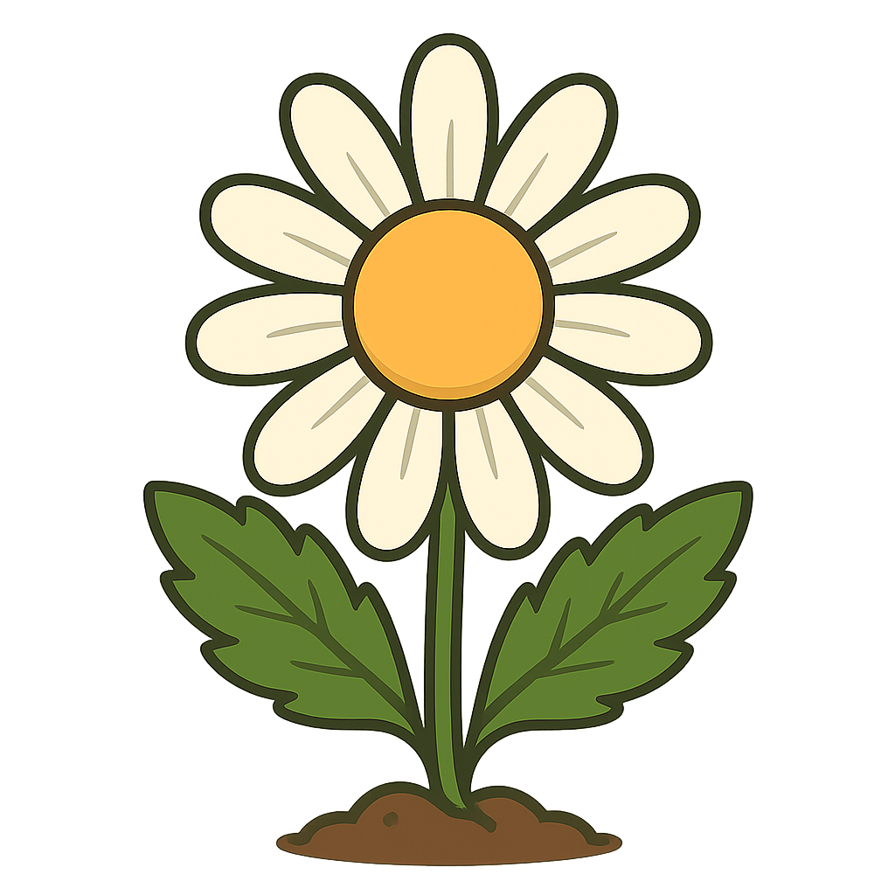

أُقْحُوان
لعبة مراجعة
الرئيسية
الصف الثاني عشر العلمي
الصف الحادي عشر العلمي
الصف العاشر
افتح الصندوق - لعبة مراجعة مصطلحات الجهاز الدوراني
اختر صندوق عشوائي و سيظهر لك سؤال، في حال أجبت عنه إجابة صحيحة تحصل على 3 نقاط و في حال أجبت إجابة خاطئة تخسر نقطتين
النقاط: 0